[ARTICLE TEXT — first paragraph. The first letter will automatically become a drop cap.]
· · ·
[QUOTE]
[ARTICLE TEXT — second paragraph.]
[SUBTITLE]

![[CAPTION 1]](../assets/placeholder.png) [CAPTION 1]
[CAPTION 2]
[CAPTION 3]
[CAPTION 1]
[CAPTION 2]
[CAPTION 3]
[ARTICLE TEXT — first paragraph. The first letter will automatically become a drop cap.]
[QUOTE]
[ARTICLE TEXT — second paragraph.]